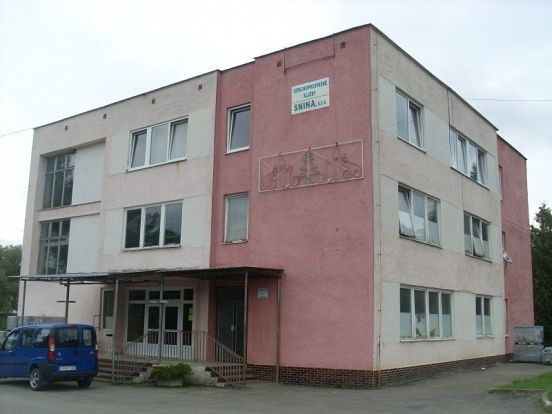
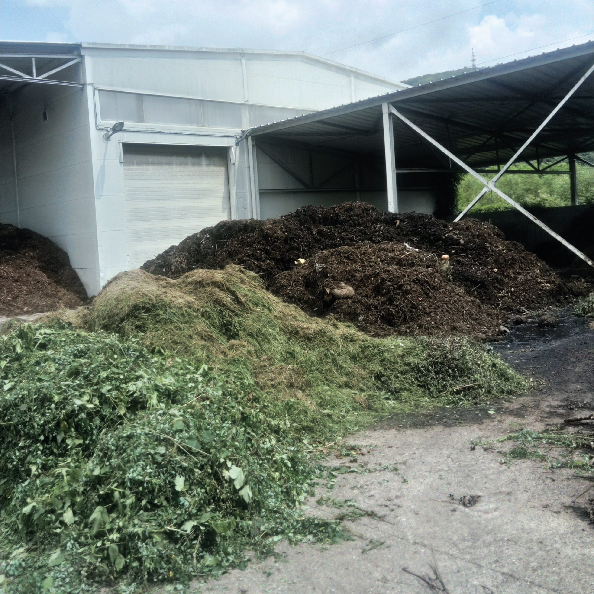
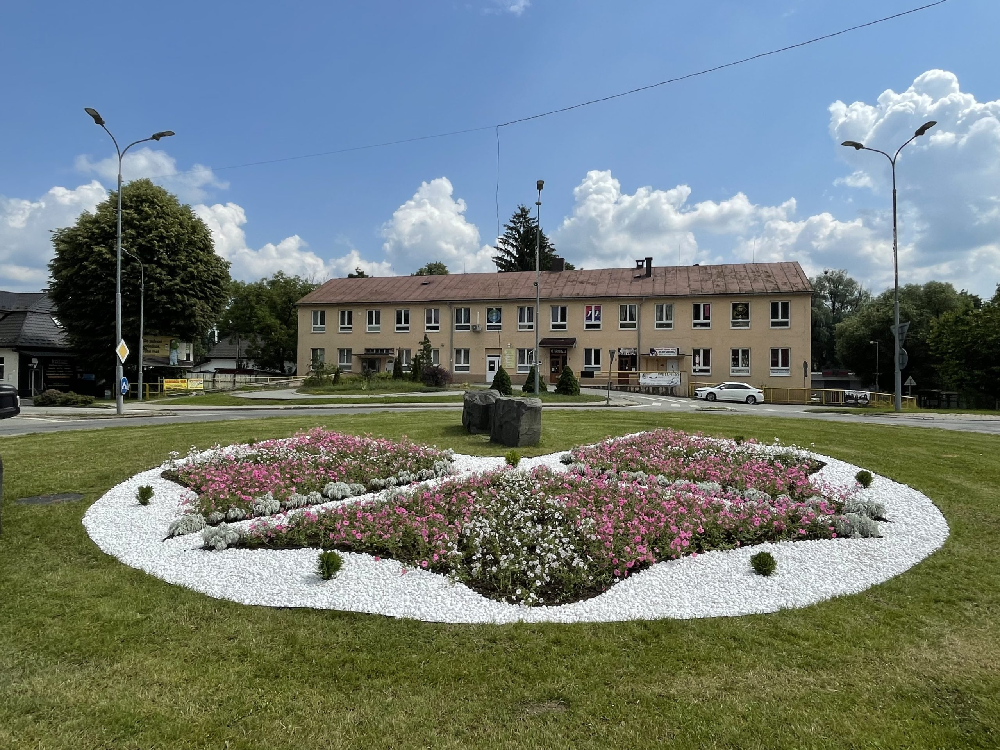
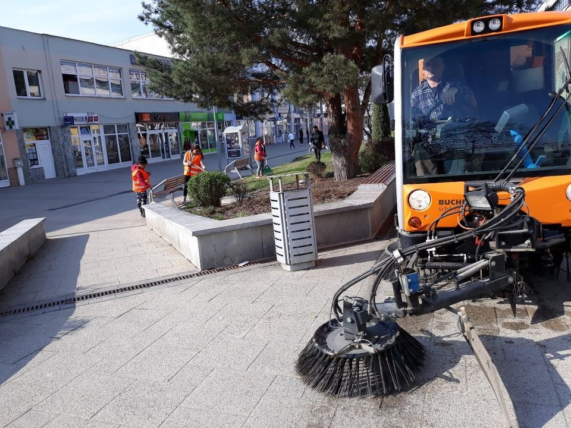

Verejnoprospešné služby Snina
Spoločnosť Verejnoprospešné služby Snina, s.r.o. (založená koncom roka 2007, jediný spoločník: mesto Snina) poskytuje najmä pohrebné služby a zverejňuje povinné dokumenty pre občanov a dodávateľov.
Väčšina ostatných mestských služieb (odpad, zeleň, komunikácie a pod.) je dnes zabezpečovaná v rámci mesta Snina. Tento web slúži ako jednoduché a prehľadné miesto na zverejňovanie dokumentov, informácie o pohrebných službách a kontakt.

Kam ďalej
Zverejňovanie dokumentov
Nižšie nájdete ukážkové zoznamy povinných dokumentov. Položky sú ilustračné (mock) pre účely tohto IDSK 3 dema — súbory nie sú dostupné na stiahnutie.
Objednávky
- Objednávka č. 12/2025 — kancelárske potreby (PDF, 128 kB) (ukážka, súbor nedostupný)
- Objednávka č. 11/2025 — pohonné hmoty (PDF, 96 kB) (ukážka, súbor nedostupný)
- Objednávka č. 10/2025 — údržba zariadení (PDF, 142 kB) (ukážka, súbor nedostupný)
Faktúry
- Faktúra č. 2025/084 — energie (PDF, 210 kB) (ukážka, súbor nedostupný)
- Faktúra č. 2025/079 — telekomunikácie (PDF, 88 kB) (ukážka, súbor nedostupný)
- Faktúra č. 2025/071 — materiál (PDF, 115 kB) (ukážka, súbor nedostupný)
Verejné obstarávanie
- Výzva — dodávka kvetinovej výzdoby (2025) (PDF, 304 kB) (ukážka, súbor nedostupný)
- Zápisnica z otvárania ponúk — údržba (PDF, 176 kB) (ukážka, súbor nedostupný)
- Oznámenie o výsledku — drobný nákup (PDF, 92 kB) (ukážka, súbor nedostupný)
Iné
- Výročná správa 2024 (PDF, 1,2 MB) (ukážka, súbor nedostupný)
- Cenník pohrebných služieb (platný od 1. 1. 2025) (PDF, 240 kB) (ukážka, súbor nedostupný)
- Organizačný poriadok (PDF, 180 kB) (ukážka, súbor nedostupný)
Zmluvy
Zmluvy nezverejňujeme duplicitne na tomto webe. Všetky zverejnené zmluvy nájdete v Centrálnom registri zmlúv (CRZ).
Centrálny register zmlúv (CRZ)
Prejsť na www.crz.gov.sk — oficiálny register zverejnených zmlúv (otvorí sa v novom okne).
Pohrebné služby
VPS Snina zabezpečuje správu cintorínov a prevádzkovanie pohrebnej služby pre občanov mesta Snina a okolia. Poskytujeme základné informácie o postupe, kontaktoch a súvisiacich dokumentoch (napr. cenník v sekcii Iné).
- Informácie k pohrebu a rezervácii obradu — telefonicky alebo osobne počas úradných hodín
- Správa hrobových miest a evidencia
- Súvisiace dokumenty a cenník sú zverejnené v sekcii Dokumenty



Oznamy
Príležitostné prevádzkové oznamy (sviatky, mimoriadne zatvorenie, krátke upozornenia). Nie je to blog ani spravodajský archív — zobrazujeme len aktuálne relevantné informácie.
Upravené úradné hodiny počas sviatku
Kontakt a fakturačné údaje
Kontakt
Verejnoprospešné služby Snina, s.r.o.
Budovateľská 2202/10
069 01 Snina
Telefón: +421 57 762 25 94
E-mail: info@vpssnina.sk
Web: www.vpssnina.sk
Úradné hodiny
Pondelok–Piatok
Zima: 7:00–15:00
Leto: 6:00–14:00
Fakturačné údaje
IČO: 43904157
DIČ: 2022508081
IČ DPH: SK2022508081 (podľa §4)
Register: Obchodný register Okresného súdu Prešov, oddiel Sro, vložka 19518/P
Spoločník: mesto Snina (100 %)
Spätná väzba — Boli tieto informácie pre vás užitočné? Spätná väzba bude dostupná po spustení webu.